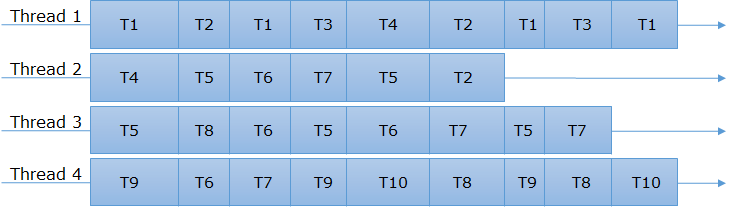

Actix
Pirmin Kalberer @implgeo
Rust Zurich, 11. Juli 2018
About me
Language history
Basic
Assembler (6502)
(Turbo) Pascal
Modula
C
C++
Java
Eiffel
Perl
Ruby
Javascript
Python
Rust (2016)
Sourcepole
- Geospatial software (C++, Python, React, Ruby on Rails, …)
- Creating maps with Rust!
Rust Web Frameworks
Hyper
- Low-Level
- Synchronous -> Asynchronous
- Base of iron, gotham, rocket, nickel, …
Rocket
- Nice API & concepts
- Beautiful documentation
- Requires Nightly
- Synchronous
actix-web


Benchmark
TechEmpower Web Framework Benchmark
Performance high-water marks for trivial exercises of framework functionality (routing, ORM, templates, etc.).
Real world apps will be substantially more complex with far lower RPS.
JSON serialization
JSON serialization of a freshly-instantiated object.
{"message":"Hello, World!"}Single query
Fetching a single row from a simple database table and serializing as a JSON response.
{"id":3217,"randomNumber":2149}
Multiple queries
Fetching multiple rows from a simple database table and serializing these rows as a JSON response.
The test is run multiple times: testing 1, 5, 10, 15, and 20 queries per request. All tests are run at 256 concurrency.

Fortunes
The framework’s ORM is used to fetch all rows from a database table containing an unknown number of Unix fortune cookie messages. An additional fortune cookie message is inserted into the list at runtime and then the list is sorted by the message text. Finally, the list is delivered to the client using a server-side HTML template.

Data updates
Fetching multiple rows from a simple database table, converting the rows to in-memory objects, modifying one attribute of each object in memory, updating each associated row in the database individually, and then serializing the list of objects as a JSON response.
Plaintext
“Hello, World” message rendered as plain text.
Hello, World!Synchronous vs. Asynchronous
Synchronous
Single Threaded:

Multi-Threaded:

https://codewala.net/2015/07/29/concurrency-vs-multi-threading-vs-asynchronous-programming-explained/
Asynchronous
Single Threaded:

Multi-Threaded:

Actix actors framework
Actor model
An actor is a computational entity that contains state information and can send, receive and handle messages.

https://www.brianstorti.com/the-actor-model/
Actix features
- Async/Sync actors
- Actor communication in a local/thread context
- Uses Futures for asynchronous message handling
- Actor supervision
- Typed messages
Actor
Message
Handler
System
fn main() {
let system = System::new("test");
// start new actor
let addr: Addr<Unsync, _> = MyActor{count: 10}.start();
// send message and get future for result
let res = addr.send(Ping(10));
Arbiter::handle().spawn(
res.map(|res| {
println!("RESULT: {}", res == 20);
})
.map_err(|_| ()));
system.run();
}Actix web
Features
- Support for HTTP/1.x and HTTP/2.0 protocols
- Streaming and pipelining
- Keep-alive and slow requests handling
- Client/server WebSockets support
- Transparent content compression/decompression (br, gzip, deflate)
- Configurable request routing
- Graceful server shutdown
- Multipart streams
- Static assets
- SSL support with OpenSSL or native-tls
- Middleware (Logger, Session, Redis sessions, DefaultHeaders, CORS, CSRF)
- Includes an asynchronous HTTP client
- Built on top of Actix actor framework
https://actix.rs
Hello World
Application State
struct AppState {
counter: Cell<usize>,
}
fn index(req: HttpRequest<AppState>) -> String {
let count = req.state().counter.get() + 1; // <- get count
req.state().counter.set(count); // <- store new count in state
format!("Request number: {}", count) // <- response with count
}
// State initialization:
App::with_state(AppState { counter: Cell::new(0) })
.resource("/", |r| r.method(http::Method::GET).f(index))
.finish()Application state is shared with all routes and resources within the same application (App).
Note: Http server constructs an application instance for each thread, thus application state must be constructed multiple times.
Request handler
Handler trait: A request handler accepts an HttpRequest instance as parameter and returns a type that can be converted into HttpResponse (Responder trait).
Async handlers
Path info extraction
/// extract path info from "/{username}/{count}/index.html" url
/// {username} - deserializes to a String
/// {count} - - deserializes to a u32
fn index(info: Path<(String, u32)>) -> Result<String> {
Ok(format!("Welcome {}! {}", info.0, info.1))
}
fn main() {
let app = App::new().resource(
"/{username}/{count}/index.html", // <- define path parameters
|r| r.method(http::Method::GET).with(index) // <- use `with` extractor
.finish();
);
}Option 2: Access by calling extract() on the extractor
Path info extraction with structs
Query parameter extraction
#[derive(Deserialize)]
struct Info {
username: String,
}
// this handler get called only if request's query contains `username` field
fn index(info: Query<Info>) -> String {
format!("Welcome {}!", info.username)
}
fn main() {
let app = App::new().resource(
"/index.html",
|r| r.method(http::Method::GET).with(index)); // <- use `with` extractor
}JSON in requests
#[derive(Deserialize)]
struct Info {
username: String,
}
/// deserialize `Info` from request's body
fn index(info: Json<Info>) -> Result<String> {
Ok(format!("Welcome {}!", info.username))
}
fn main() {
let app = App::new().resource(
"/index.html",
|r| r.method(http::Method::POST).with(index)); // <- use `with` extractor
}JSON in responses
Form handling
#[derive(Deserialize)]
struct FormData {
username: String,
}
/// extract form data using serde
/// this handler gets called only if the content type is *x-www-form-urlencoded*
/// and the content of the request could be deserialized to a `FormData` struct
fn index(form: Form<FormData>) -> Result<String> {
Ok(format!("Welcome {}!", form.username))
}Multiple extractors
fn index((path, query): (Path<(u32, String)>, Query<Info>)) -> String {
format!("Welcome {}!", query.username)
}
fn main() {
let app = App::new().resource(
"/users/{userid}/{friend}", // <- define path parameters
|r| r.method(http::Method::GET).with(index)); // <- use `with` extractor
}Actix provides extractor implementations for tuples (up to 10 elements) whose elements implement FromRequest.
Request routing
fn index(req: HttpRequest) -> impl Responder {
"Hello from the index page"
}
fn hello(path: Path<String>) -> impl Responder {
format!("Hello {}!", *path)
}
fn main() {
App::new()
.resource("/", |r| r.method(Method::Get).with(index))
.resource("/hello/{name}", |r| r.method(Method::Get).with(hello))
.finish();
}Middleware - CORS
let app = App::new().configure(|app| {
Cors::for_app(app) // <- Construct CORS middleware builder
.allowed_origin("https://www.rust-lang.org/")
.allowed_methods(vec!["GET", "POST"])
.allowed_headers(vec![http::header::AUTHORIZATION, http::header::ACCEPT])
.allowed_header(http::header::CONTENT_TYPE)
.max_age(3600)
.resource(/* ... */)
.register()
});Middleware - CORS (allow from all)
Middleware - CSRF
let app = App::new()
.middleware(
csrf::CsrfFilter::new().allowed_origin("https://www.example.com"),
)
.resource("/", |r| {Origin Header based.
Middleware - User Sessions
fn main() {
actix::System::run(|| {
server::new(
|| App::new().middleware(
SessionStorage::new( // <- create session middleware
CookieSessionBackend::signed(&[0; 32]) // <- create signed cookie session backend
.secure(false)
)))
.bind("127.0.0.1:59880").unwrap()
.start();
});
}- Built-in: Session Cookie
- Other implementations must implement
SessionBackend
Middleware - Identity handling
fn index(req: HttpRequest) -> Result<String> {
// access request identity
if let Some(id) = req.identity() {
Ok(format!("Welcome! {}", id))
} else {
Ok("Welcome Anonymous!".to_owned())
}
}
fn login(mut req: HttpRequest) -> HttpResponse {
req.remember("User1".to_owned()); // <- remember identity
HttpResponse::Ok().finish()
}
fn logout(mut req: HttpRequest) -> HttpResponse {
req.forget(); // <- remove identity
HttpResponse::Ok().finish()
}fn main() {
let app = App::new().middleware(IdentityService::new(
// <- create identity middleware
CookieIdentityPolicy::new(&[0; 32]) // <- create cookie session backend
.name("auth-cookie")
.secure(false),
));
}- Built-in: Cookie based identity
- Other implementations must implement
RequestIdentity
Static file handler
Testing support
fn index(req: HttpRequest) -> HttpResponse {
if let Some(hdr) = req.headers().get(header::CONTENT_TYPE) {
HttpResponse::Ok().into()
} else {
HttpResponse::BadRequest().into()
}
}
fn main() {
let resp = TestRequest::with_header("content-type", "text/plain")
.run(index)
.unwrap();
assert_eq!(resp.status(), StatusCode::OK);
let resp = TestRequest::default().run(index).unwrap();
assert_eq!(resp.status(), StatusCode::BAD_REQUEST);
}HTTP Client API
use actix_web::client;
fn main() {
tokio::run({
client::get("http://www.rust-lang.org") // <- Create request builder
.header("User-Agent", "Actix-web")
.finish().unwrap()
.send() // <- Send http request
.map_err(|_| ())
.and_then(|response| { // <- server http response
println!("Response: {:?}", response);
Ok(())
})
});
}Real World Applications
Fundstelleninventar
- JsonAPI served with Actix
- DB access with Diesel
- React client app
Time tracking UI
- JsonAPI served with Actix
- DB access with Diesel
- React client app
t-rex
- Vector Tile Server
- Command line and web server
- Actix-Web + Actix (planned)
- Integrated web app
- PostGIS + GDAL data sources
https://t-rex.tileserver.ch/